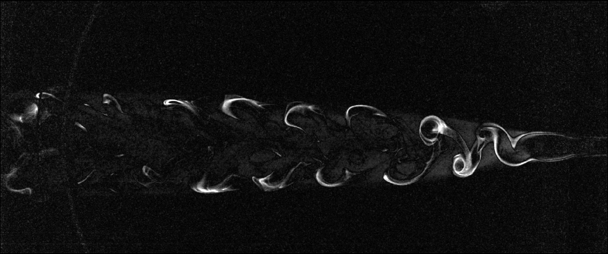
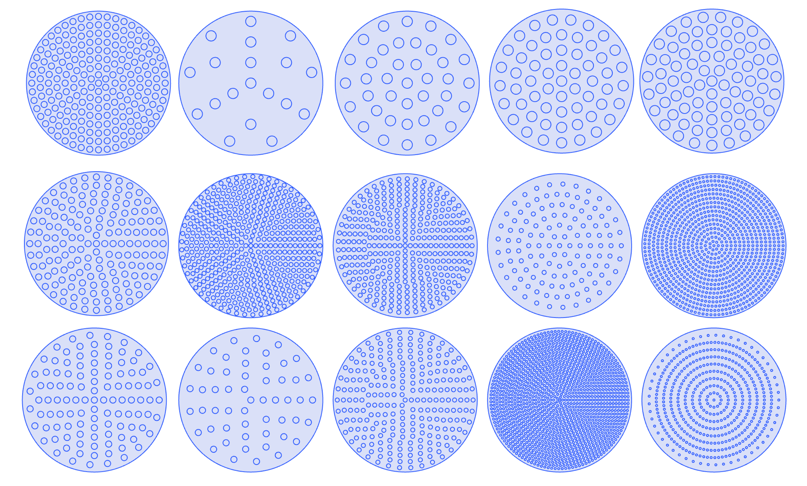
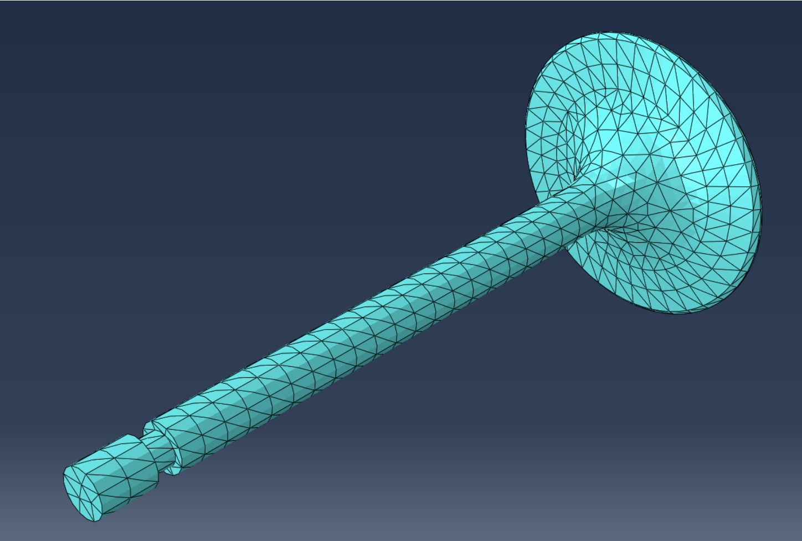
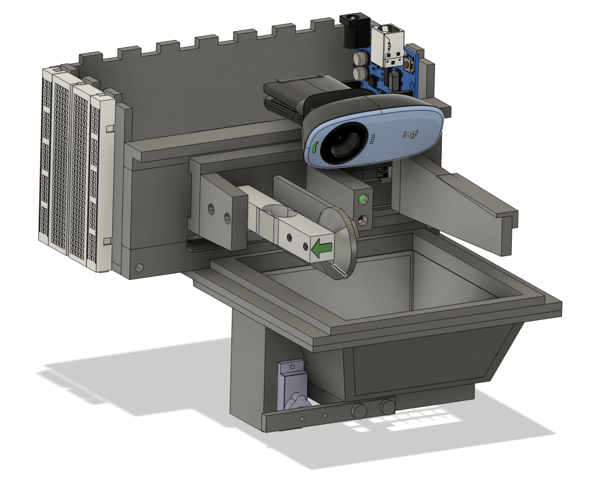

Ultrasonnicaly-Driven lipid-coated microbubble dynamics
Track and modelise the motion of a microbubble with Rayleigh-Plesset
Mechanical Engineering — Fluids · Aeronautics · Aerospace
Sporty, resilient, adaptable, and curious about science and art in general.
Hands-on and simulation work across fluid mechanics, sensing and data analysis. Click a card for a PDF report.
Track and modelise the motion of a microbubble with Rayleigh-Plesset



Studying of the differents method of tracking and visualization of fluid motion.




Born in Tahiti on January 13th, 2002, I grew up close to the ocean, sailing from the age of five and learning violin at seven. I enjoy fishing, surfing, and hiking, and I have competed in three sailing world championships, with a best result of 4th place, as well as seven international championships. These experiences taught me discipline, resilience, cultural openness, and how to manage preparation and logistics at a high level. In parallel, four years in an orchestra strengthened my sense of organization and consistency, as I balanced music practice with school. All these experiences shaped my curiosity and pushed me toward engineering, where I now explore fluid mechanics, aeronautics, and aerospace.